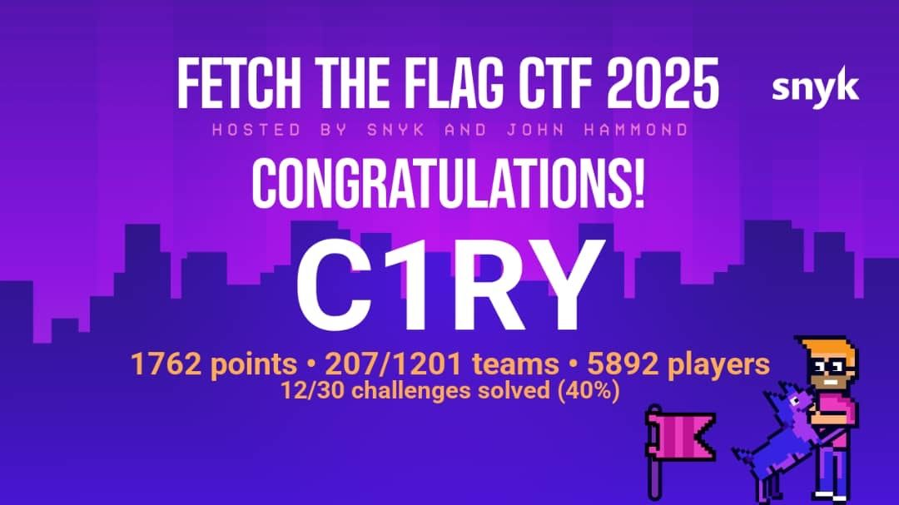

UMCS CTF
Competition notes and challenge writeups.
Competition notes
Short recaps and challenge writeups, with evidence where available.
My first ever CTF
I joined team C1RY for Snyk's Fetch The Flag. We placed 207th of 1,201 teams with 1,762 points and 12 of 30 challenges solved. I worked on reverse-engineering challenges.
Read the recap & see evidence ↗
More notes